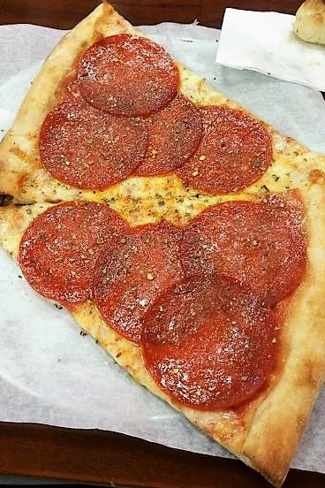

Alex's New Jersey Pizza Rankings
1. Star Tavern
Orange, New Jersey
The New York style thin crust is so good, it might even be better than any thin crust pizza he's had in New York. The other feature of this pizza that stands out to Alex are the pepperonis. Star Tavern has old-school mini pepperonis that shrink into crispy, bite size pepperonis. It was also voted the 2nd best pizza across the entire United States by The Daily Meal in 2015.
Dough:
Crust:
2. Angelo's Restaurant & Pizzeria
Bloomfield, New Jersey
The best thing about Angelo's is that it keeps its Sicilian style pizza authentic and simple. One componenet that always keeps Alex coming back for more is that they char the bottom edge of the crust, which means that the best bite truly is the last one.
Dough:
Crust:
3. Mr. Dino's Pizzeria & Restaurant
Montclair, New Jersey
Mr Dino's crust is a tad chewy, but not bad enough to make it unpleasant to eat. What truly sets Mr Dino's apart is its tangy tomato sauce and huge pepperonis. Another highlight is that the proportion of sauce to cheese to toppings is always exemplary.
Dough:
Crust:

Harry's New York Pizza Rankings
1. Sal's Pizza
Mamaroneck, New York
Harry proudly asserts that his hometown pizza place, Sal's, is not only the best pizza in Mamaroneck, but quite possibly the best pizza outside of the city. It's a genuine NY style pizza, easily foldable and addictingly greasy on the top while still maintaing a firm, thin crust on the bottom.
Dough:
Crust:
2. Totonno's Pizzeria Napolitana
Brooklyn, New York
The standout item at Tottonno's is the pepperoni mushroom pie. The fresh mozzarella, pepperoni, mushrooms, sauce, and parmesean are cooked to perfection in the restaurant's coal fired oven. Another reason why Harry loves this place is because the crust is the epitome of the thin and crispy NY style Harry loves.
Dough:
Crust: